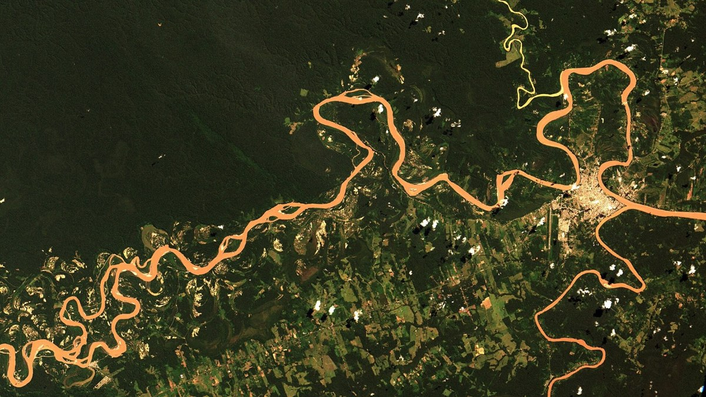
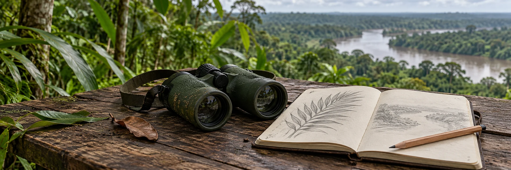

Transformaciones del bosque
La pérdida de cobertura puede fragmentar el paisaje y modificar el hábitat. Para saber dónde y cuándo ocurrió un cambio se necesita una serie temporal, no una sola capa histórica.
Ver fuente y alcance [1] →Cambios · evidencia · conservación
Los cambios del bosque y del agua se comprenden comparando observaciones, fechas y métodos. Esta página reúne las presiones documentadas, explica cómo se estudian y conecta con las respuestas de conservación.

01 · Cambios ambientales
Estas presiones pueden coincidir, pero no tienen la misma intensidad ni extensión en toda la región. Cada afirmación debe leerse con el lugar, el periodo y el método de su fuente.
La pérdida de cobertura puede fragmentar el paisaje y modificar el hábitat. Para saber dónde y cuándo ocurrió un cambio se necesita una serie temporal, no una sola capa histórica.
Ver fuente y alcance [1] →La minería aurífera puede modificar sedimentos y exponer organismos a contaminantes. Los estudios citados describen sitios y periodos concretos; no representan un diagnóstico uniforme de todos los ríos.
Revisar los estudios [2–3] →La sequedad, el combustible y una fuente de ignición influyen en el riesgo. Las acciones regionales de prevención documentan una respuesta de gestión; no señalan incendios activos.
Consultar el contexto [4] →La remoción de suelo y vegetación puede cambiar el agua, los sedimentos y las comunidades acuáticas. La evidencia debe vincularse con los puntos de muestreo y el periodo estudiado.
Leer el alcance de la evidencia [2] →02 · Evidencia
Campo, datos geográficos e imágenes satelitales responden preguntas diferentes. Al combinarse permiten comparar, ubicar y validar lo observado.

Las mediciones repetidas permiten comparar condiciones. Conviene registrar ubicación, fecha, equipo, diseño de muestreo y limitaciones.
Antes de superponer capas se revisan el sistema de referencia, la escala, la fecha, la precisión y el propósito con el que fue creado cada conjunto de datos.
Consultar la metodología cartográfica →Comparar fechas exige considerar nubes, estación, resolución y condiciones de captura.
03 · Conservación
Monitorear, proteger y recuperar son respuestas complementarias. Cada una necesita objetivos, responsables, seguimiento y participación de quienes viven y trabajan en el territorio.
Proteger
Conoce sus categorías, objetivos y formas de gestión en Madre de Dios.
Explorar las áreas →Comprender
Relaciona bosques, ríos, humedales y límites mediante el atlas educativo.
Abrir el atlas →Verificar
Revisa publicaciones, metodología y alcance antes de generalizar un resultado.
Ir a la biblioteca →04 · Trazabilidad
Las fuentes sustentan ejemplos concretos. Ninguna de ellas, por separado, describe el estado actual de toda la región.
MINAM · monitoreo de cobertura y pérdida de bosques. Sus productos tienen periodos y métodos propios.
Consultar plataforma ↗CINCIA · 2023 · proyecto 2020–2022. Resultados de estaciones del río Madre de Dios y tributarios; no diagnóstico de toda la región.
Leer publicación ↗Gerson y colaboradores · Nature Communications · 2022. Compara sitios próximos y alejados de minería; no es un mapa de exposición actual.
Leer investigación ↗SERNANP · 2021. Documenta acciones regionales de prevención; no identifica incendios activos.
Consultar nota institucional ↗Copernicus · documentación de la misión y sus instrumentos. Describe capacidades; no presenta resultados calculados por EcoSelva.
Consultar documentación ↗USGS · documentación técnica de Landsat. Los índices requieren imágenes comparables, contexto y validación.
NDVI ↗ · NBR ↗